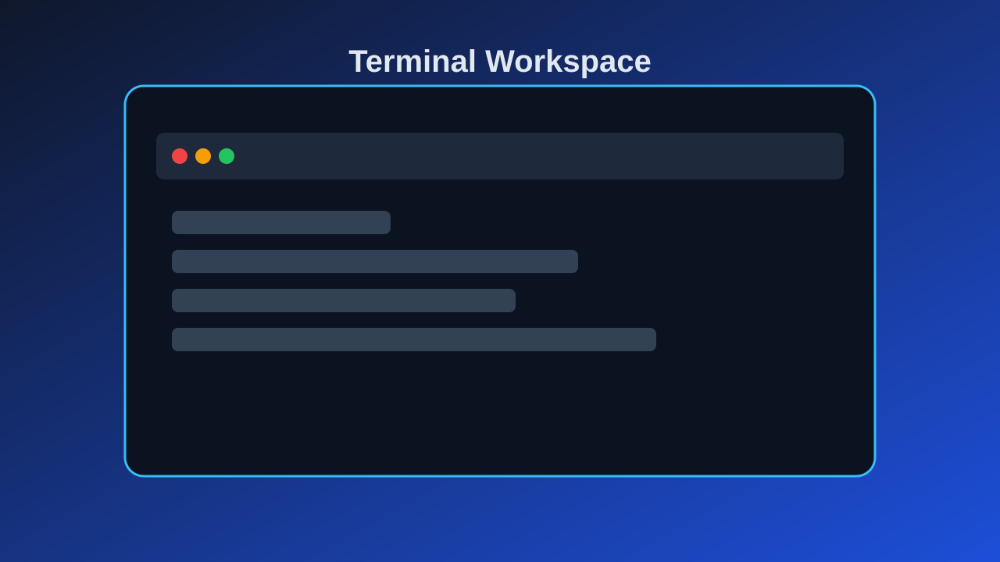
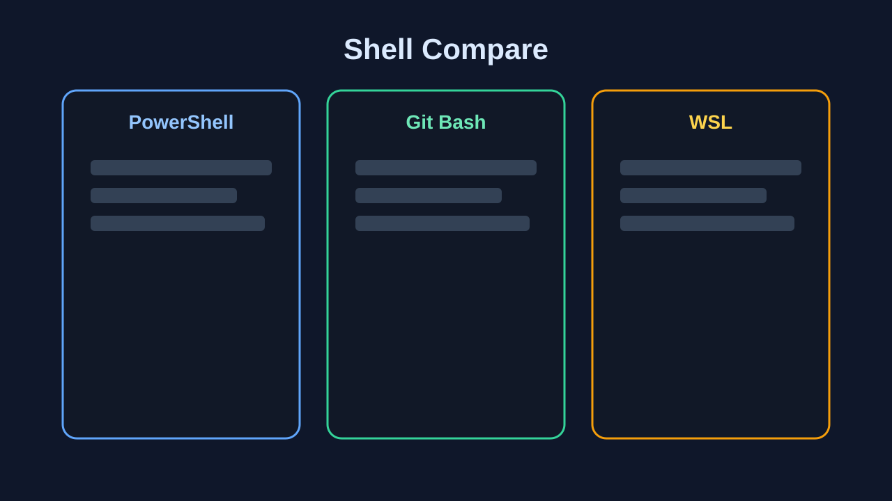
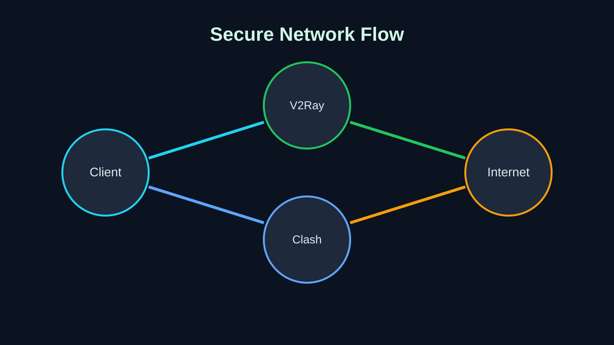
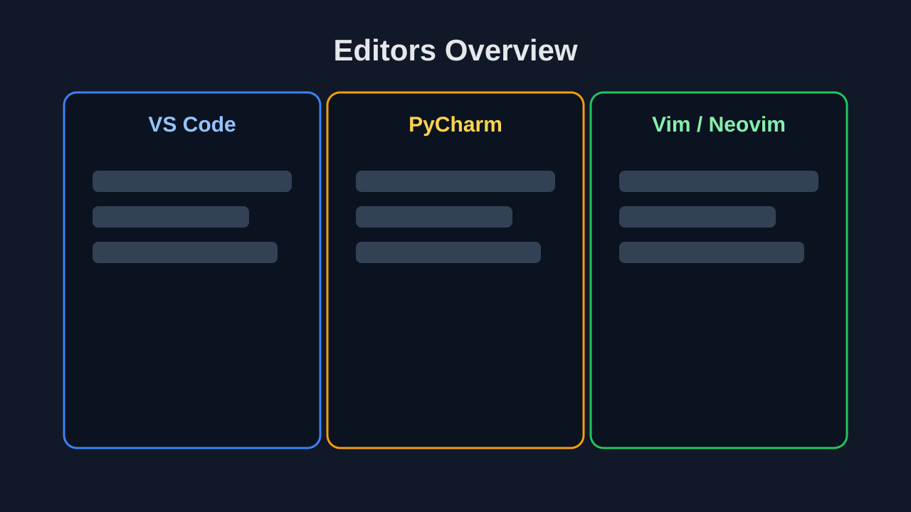
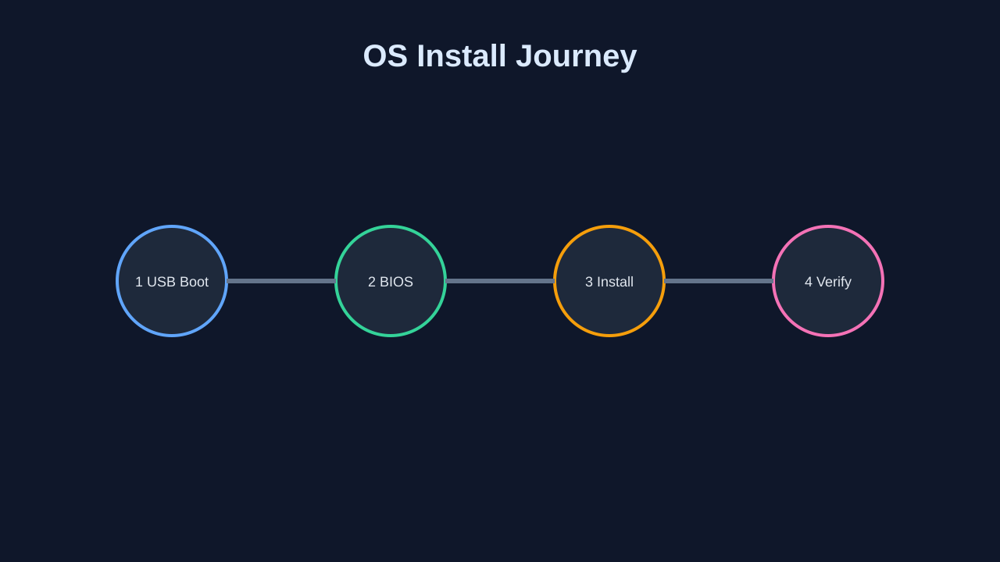
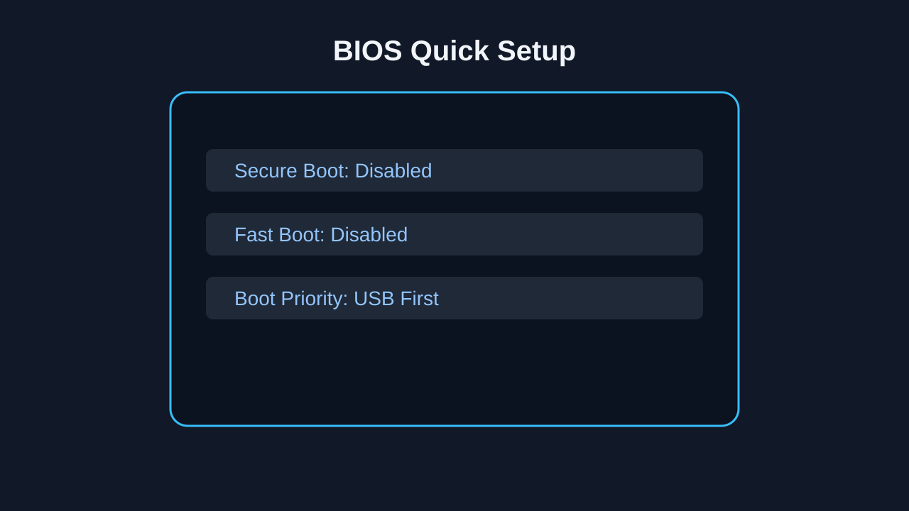

Windows Terminal
统一入口，标签化管理多个 shell。
 什么是命令行工具
什么是命令行工具
从命令行到 AI 编程，实践是检验真理的唯一标准。
课堂重点：先让学生理解终端思维，再上手不同终端环境。
统一入口，标签化管理多个 shell。

按项目需求选择，重点对比命令生态与兼容性。

课堂重点：开发前置环境准备，工具选型要“够用 + 稳定”。
V2Ray / Clash：安全访问外部开发资源。

VS Code / PyCharm / Vim：按团队与任务选择。

课堂重点：把 AI 当“协作搭档”，而不是完全替代开发者。
补全与建议，提升编码速度。
理解需求并执行多步骤开发任务。
适合大上下文代码理解与协作。
轻量且灵活的 AI 编程工作流。
课堂重点：前后端与数据库的协同，不只学“一个框架”。
课堂重点：安装流程可视化，少讲理论，多讲关键步骤。
Windows 11 / Ubuntu / Debian / Arch / 云服务器。

启动盘工具：Rufus / balenaEtcher / Ventoy；关闭 Secure Boot 与 Fast Boot。

 clash Verge Rev Github
clash Verge Rev Github mysql 官方文档
mysql 官方文档 nginx 官方文档
nginx 官方文档 云服务器 官方文档
云服务器 官方文档